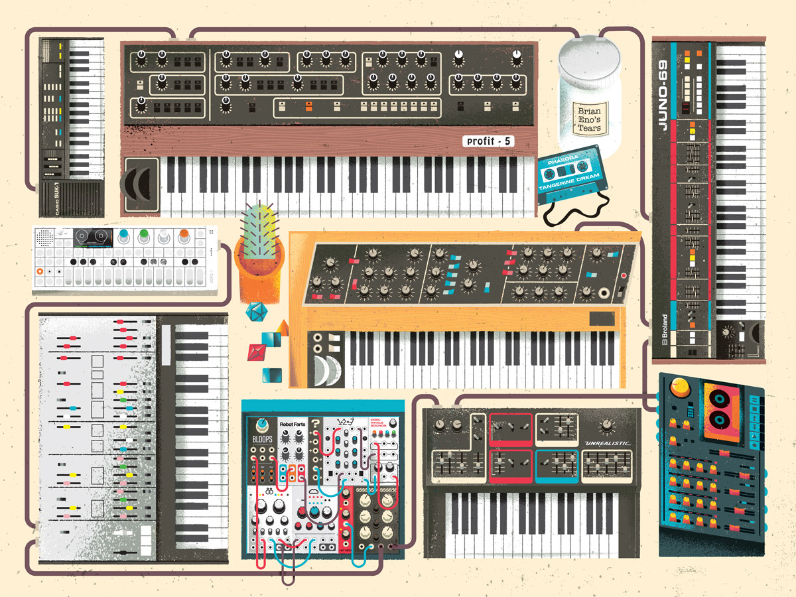

- Rock
El rock es un término amplio que agrupa una variedad de géneros de música
popular originados como rock and roll a principios de la década de 1950 en
Estados Unidos y que evolucionó en un gran rango de diferentes estilos en los 60,
particularmente en Reino Unido y Estados Unidos. Tiene sus raíces en el rock
and roll de los 40 y 50, proveniente de la combinación de géneros anteriores como
el blues, rhythm and blues y el country.
Puedes escuchar: Cage the Elephant, The Fratellis o The Raconteurs.
- Cumbia
La cumbia es un ritmo musical y baile folclórico tradicional de Colombia.12 Posee contenidos
de tres vertientes culturales, principalmente indígena y negra africana y, en menor medida,
blanca (española), siendo fruto del largo e intenso mestizaje entre estas culturas durante la
Conquista y la Colonia. El investigador Guillermo Abadía Morales en su "Compendio del folclor
colombiano", volumen 3, #7, publicado en 1962, afirma que "ello explica el origen en la
conjugación zamba del aire musical por la fusión de la melancólica flauta indígena gaita o caña
de millo, es decir, Tolo o Kuisí, de las etnias Cunas y Koguis, respectivamente, y la alegre e
impetuosa resonancia del tambor africano.
Puedes escuchar: Los Angeles Azules, Los Acosta y Grupo Sonador.
- K-Pop
El K-Pop tiene susraíces en la música pop, aunque también toma como referencia estilos variados
como el soul, rap, rock, R&B e incluso el funk. La música y los grupos son muy importantes, peroel
aspecto audiovisual (los vídeos) también tienen gran protagonismo en el K-Pop.
Se caracteriza por unos ritmos pegadizos,
videoclips muy llamativos y una estética muy particular.
En 1953, cuando Corea del Norte y Corea del Sur se separaron, Corea del Sur introdujo la música occidental
(pop, rock and roll). En los años 90 el pop coreano, o K-Pop, emergió con gran fuerza gracias a grupos como
Seo Tai-ji & Boys.
Puedes escuchar: BTS, Black Pink o EXO.
- Hip-Hop
El hip hop es una cultura originada en el sur del Bronx y Harlem, en la ciudad de Nueva York, entre jóvenes
afroamericanos y puertorriqueños en Estados Unidos durante la década de 1970. Si bien el término hip hop se usa a menudo para referirse
al estilo musical y al estilo de vida, se considera que el hip hop no solo se circunscribe al ámbito musical y por el contrario consta
de nueve elementos de los cuales cuatro son imprescindibles para describir este fenómeno en su totalidad: rap (oral: recitar o cantar),
turntablism o "DJing" (auditiva o musical), breaking (físico: baile) y grafiti (visual: pintura).
Puedes escuchar: Odisee, Lamar o Quasimoto.
- Electronic
La música electrónica es aquel tipo de música que emplea instrumentos musicales electrónicos y tecnología
musical electrónica para su producción e interpretación. En general, se puede distinguir entre el sonido
producido mediante la utilización de medios electromecánicos de aquel producido mediante tecnología electrónica,
la cual también puede ser mezclada. Algunos ejemplos de dispositivos que producen sonido electro-mecánicamente
son el telarmonio, el órgano Hammond y la guitarra eléctrica. La producción de sonidos puramente electrónica
puede lograrse mediante aparatos como el theremin, el sintetizador de sonido y el ordenador.
Puedes escuchar: Alan Walker, LMFAO o Avicii.
